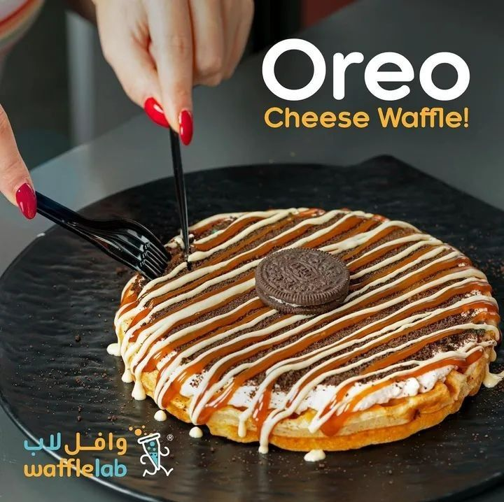
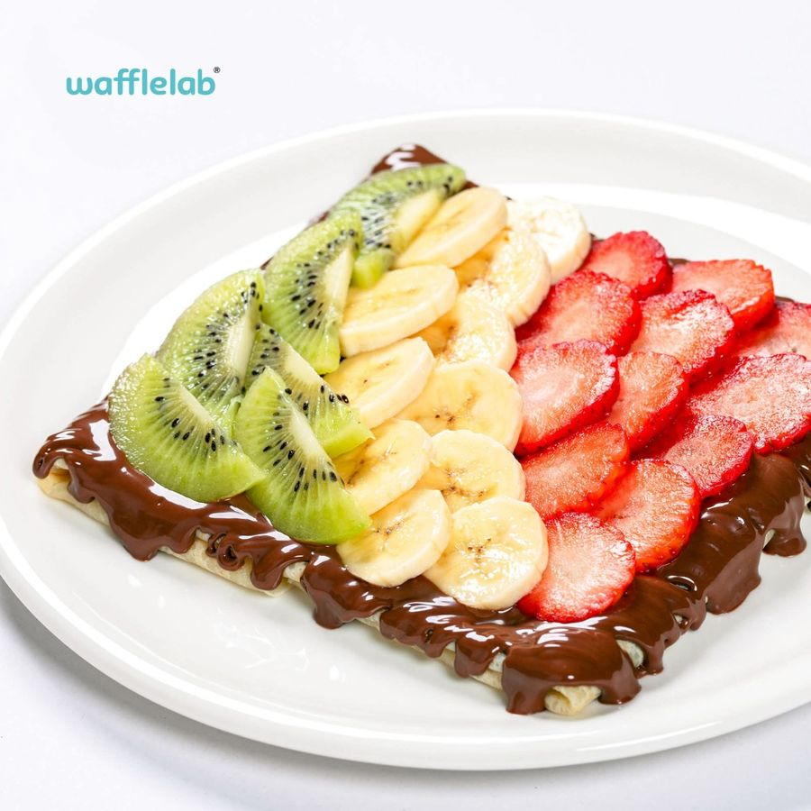
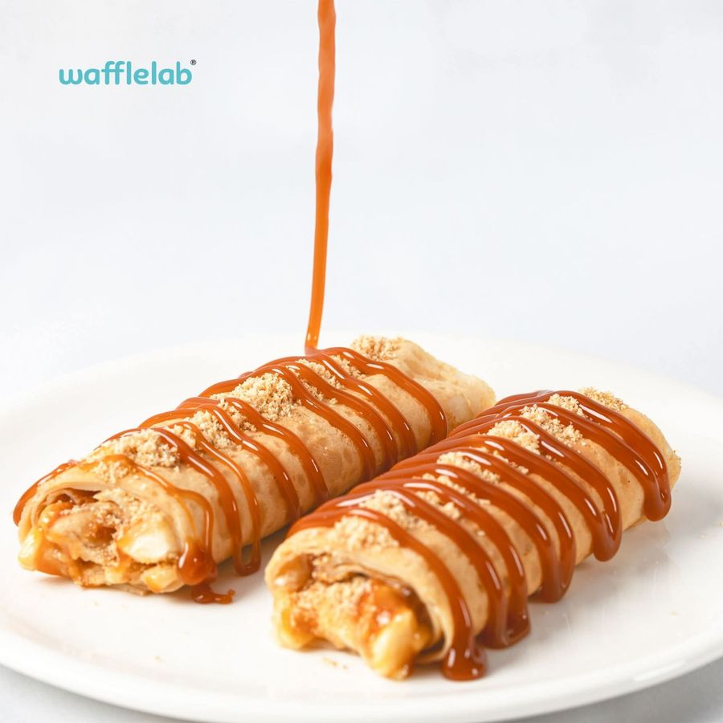
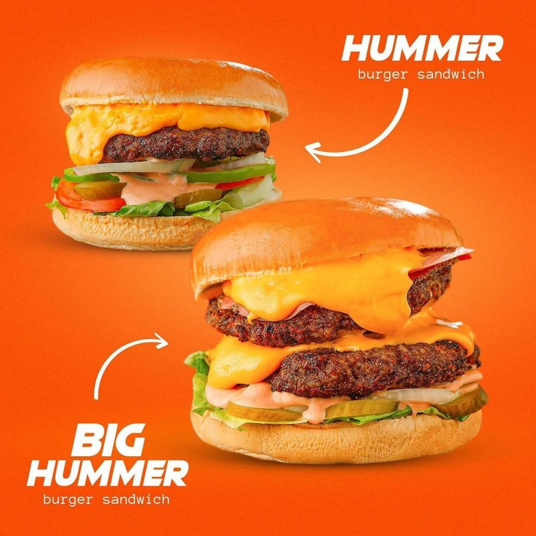
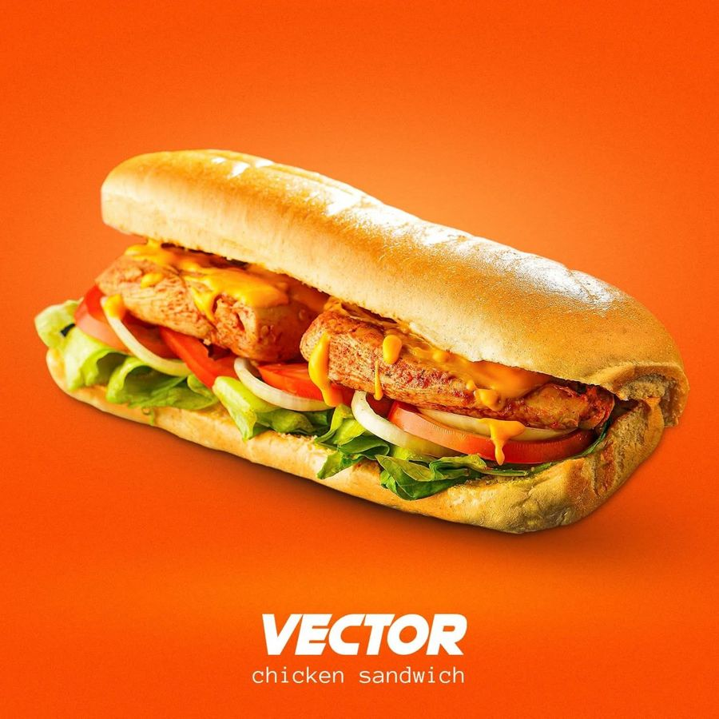
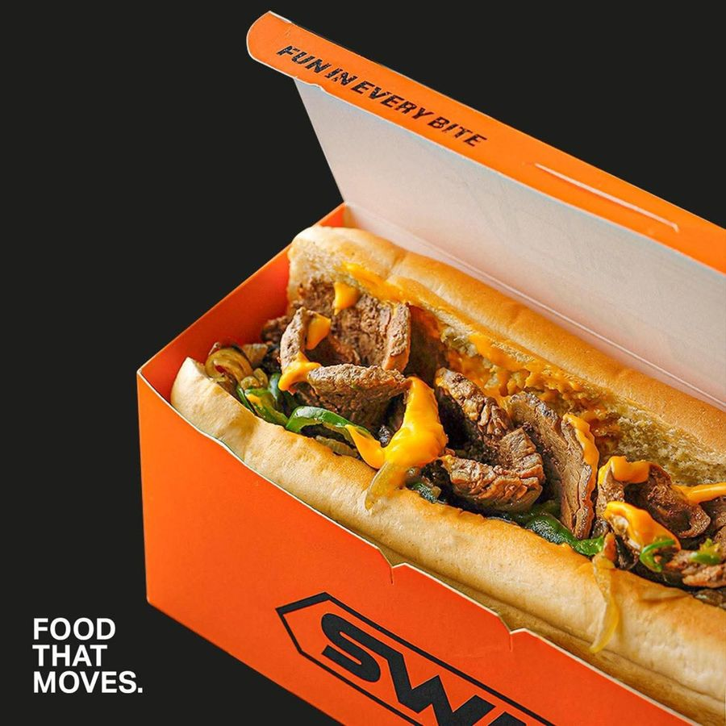
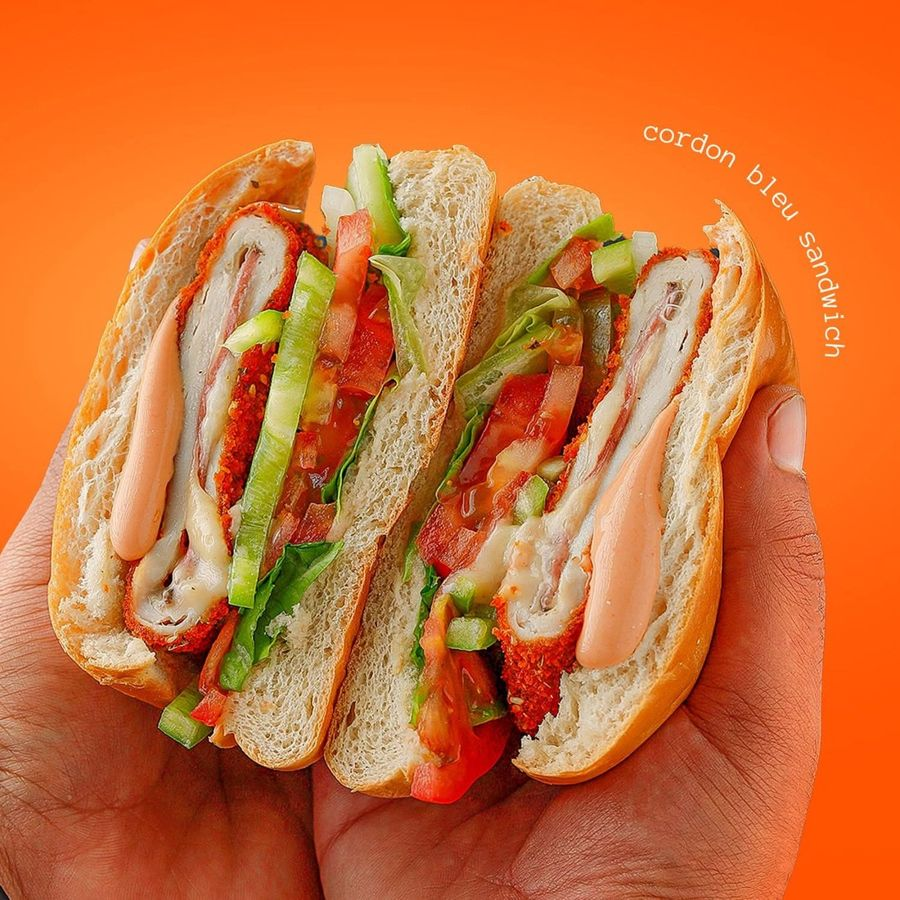
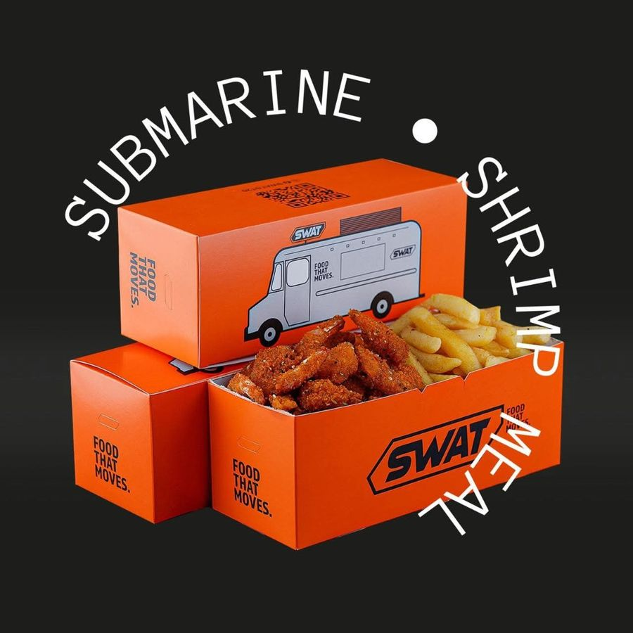

Coffee & Beverages
Hot and cold drinks to a consistent, high standard.
Barista, coffee shop manager and waffle & crepe chef with 8+ years behind the counter.

Concept, menu design, hiring, training, daily operations and marketing. A selection of the waffle, crepe and coffee menu.
 A smile in every biteSpanish latte
A smile in every biteSpanish latte
Oreo waffle
Fruit waffle
Crepes Waffle sticks
Waffle sticks Lotus waffle
Lotus waffle Classic waffle
Classic waffleFounded and run alongside Waffle House: grilled, smashed and crispy chicken burgers and sandwiches with unique breading and signature sauces.

Hummer & Big Hummer General
General
Vector
Steak & cheese box Steak sandwich
Steak sandwich
Cordon bleu
Submarine shrimp SWAT Friday
SWAT Friday Takeaway shoot
Takeaway shoot